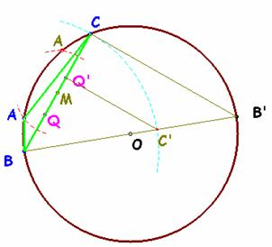
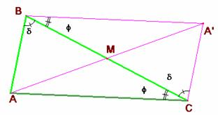

Problema 270.-
Un triángulo ABC, verifica entre uno de sus lados, a, la mediana
correspondiente a ese lado ma, y el radio
del círculo circunscrito R, la relación:
a2 = 4 R ma. (1)
Probar si es cierto o no que aparte de los triángulos rectángulos en
A, hay, al menos otro.
Romero, J.B. (2005):
Comunicación personal (Dedicado a Murray S. Klamkin)
Solución de Saturnino Campo Ruiz,
profesor del IES Fray Luis
de León (Salamanca)..-
La relación (1) puede expresarse de otro modo
sustituyendo 2R por .
a2 = 4 R ma.
(1) se transforma, después de
simplificar, en 2·ma =
a·sen A (
Sea a < 2R. La construcción del triángulo a partir de los tres datos, lado a, mediana correspondiente ma y
radio R de la circunferencia
circunscrita es inmediata e única, salvo movimientos.
Sobre
la circunferencia de radio R se toma
una cuerda BC de longitud a. Desde el punto medio de ella un arco
de radio ma
determina el vértice A que falta para
completar la construcción del triángulo, (hay otro corte con el que se
construye un triángulo simétrico).
En
el caso particular de coincidir el valor de a
con el diámetro de la circunferencia circunscrita, el ángulo opuesto A es recto y la mediana coincide con el
radio. La construcción anterior no sirve; cualquier punto de la circunferencia
puede tomarse como vértice A, y hay
infinitas soluciones. Si excluimos este caso, utilizando la fórmula del enunciado,
sólo necesitamos dos datos:

1.- Si tenemos a y
R o a y ma, el segmento que falta se construye
fácilmente a partir del teorema de Thales, expresando
la relación (1) del enunciado como .
2.- Si nos dan R y ma tenemos que a
es el doble de la media proporcional de ambos.
Cálculo de la mediana en función de los lados.

Veamos cómo calcular la mediana de un triángulo en función de los lados del mismo.El segmento AA’ es igual a 2·ma. Según el teorema
del coseno para el triángulo AA’C se tiene:
(2·ma)2 = b2
+ c2 – 2·bc·cos(f +d). (2)
En la figura adjunta
podemos ver que el ángulo A del
triángulo ABC es el suplemento
de f +d, y por ello sus cosenos
son opuestos, pudiendo poner:
(2·ma)2 = b2
+ c2 +2·bc·cos A. (3)
Como por otra parte
tenemos a2 = b2 + c2 – 2·bc·cos A (4) sumando
ambas eliminamos el coseno quedando
(2·ma)2 + a2= 2(b2
+ c2) (5)
que permite el cálculo de la mediana a partir de los
lados.
Para a < 2R los triángulos
que verifican (1) son obtusángulos.
Excluido
el triángulo rectángulo, todos los triángulos que verifican la relación (1) son
obtusos en A.
Restando
(3) y (4) elimina b2 + c2 y nos queda (2·ma)2 = a2 + 4 bc·cos A.
Usando
ahora (
Después
de simplificar (cos A0) queda
–a2· cos A = 4 bc (6)
expresión que nos indica que el ángulo A es mayor de 90º, pues su coseno es
negativo. c.q.d.